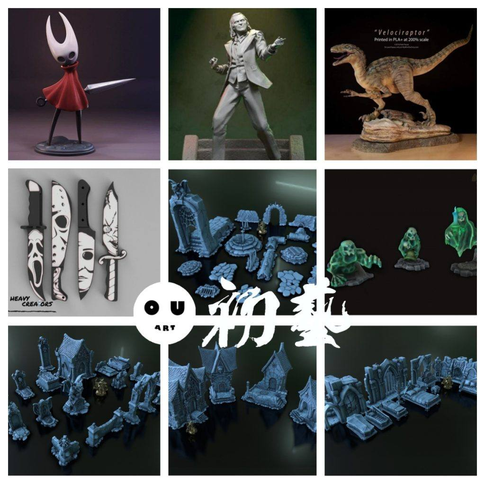
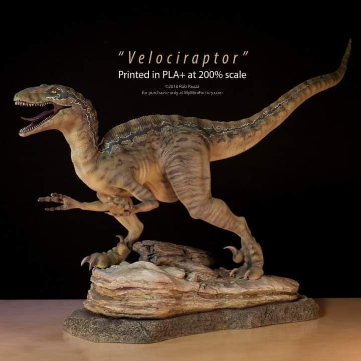
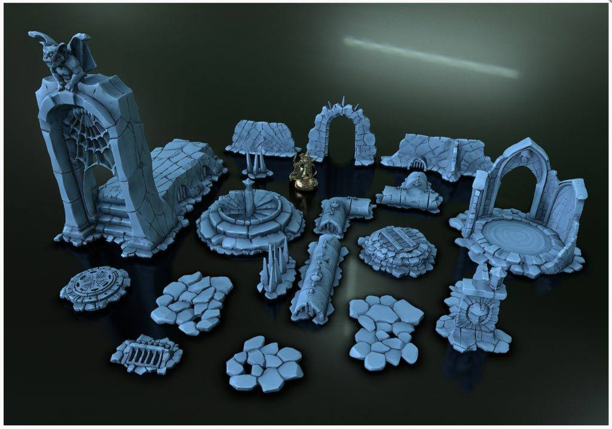

模型分享
10月28日STl图纸文件分享

1.空洞骑士，分件简易，适合打印练习测试。
链接：https://pan.baidu.com/s/1PH9L3U8mltCjvK9Zb_scog
提取码：m15n

2.小丑，电影里的楼梯跳舞造型，比较还原。
链接：https://pan.baidu.com/s/15f5E_fAiR_a0dTEdzacBxA
提取码：bsfq

3.迅猛龙，精度不错的一只，喜欢恐龙的朋友可以收藏。
链接：https://pan.baidu.com/s/1PDb_qGWz5S9ud-2_iMMP2A
提取码：zlc5

4.恐怖主题小刀，四把主题小刀，fdm可以整一整。
链接：https://pan.baidu.com/s/1VgRuY_Zhh1MJDIDgvEeGcQ
提取码：bfxw

5.墓地主题系列，场景用墓地主题，可以组合很多场景。
链接：https://pan.baidu.com/s/1_0uGWzyqSoWsmdeO9_VGvA
提取码：32er



以上内容仅供个人使用（非商用）
ONLY for PERSONAL (NON-COMMERCIAL) use.
加群获得更多免费模型！